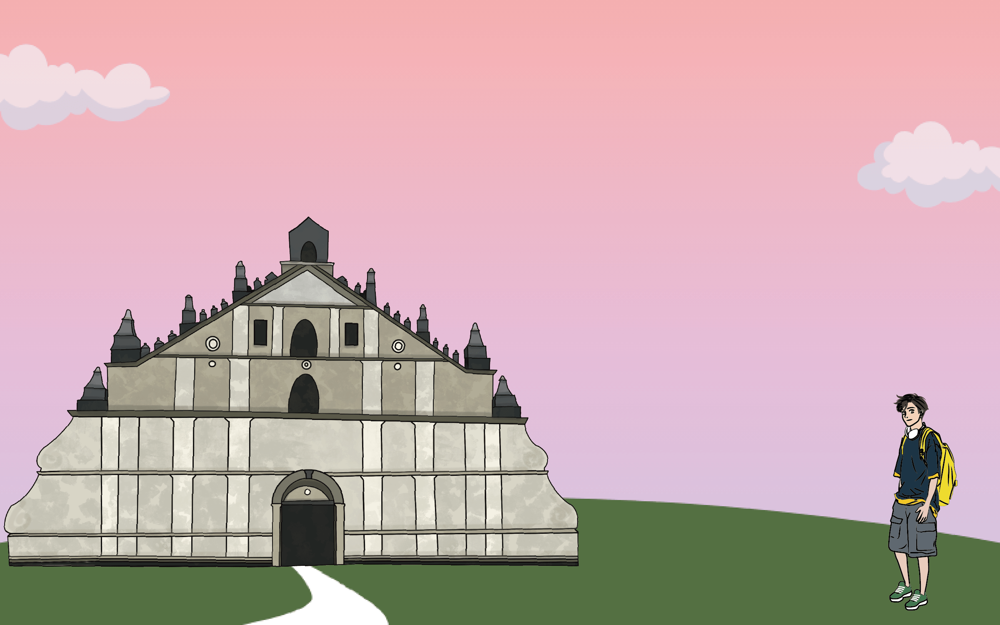
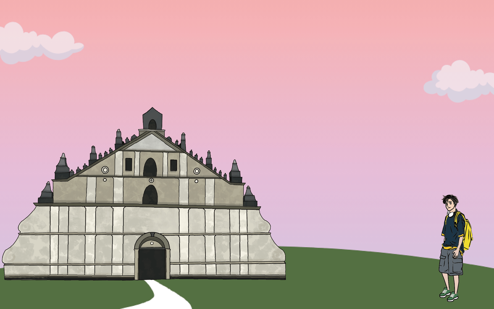
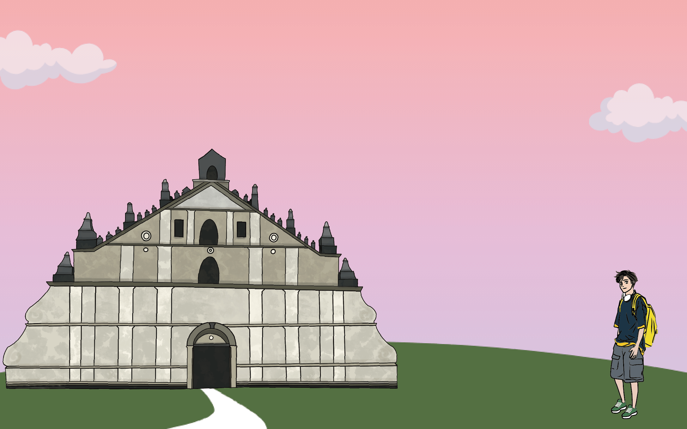
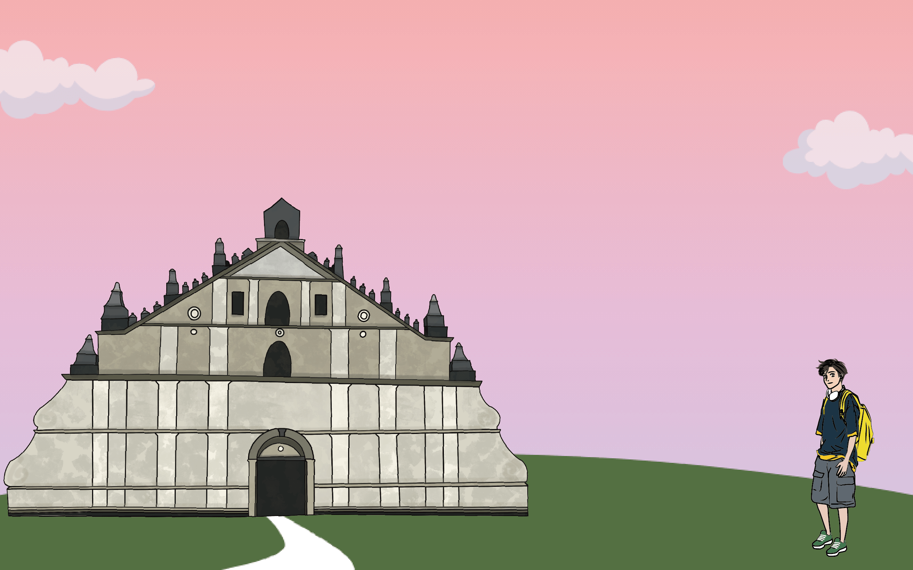

菲律賓Philippines
 

 

建築特色
熱帶海島國家的菲律賓，早期沿海或內陸的傳統建築大多是高腳屋，用草木、竹子建造為房子的主要結構，主要功能是室內外通風涼爽，而在內陸的高腳屋可在下面豢養家禽家畜
菲律賓的房屋建築風格豐富多彩，具有東西方結合、現代與古老並存的主要特徵；有些建築受基督教影響，具有十分明顯的古典歐洲哥德式建築色彩，有些建築是代表美國文化的現代化建築，有些建築卻仍然受伊斯蘭和中國建築的影響
現代特色建築

首都銀行中心 Metrobank Center
總高度318公尺，位於菲律賓馬尼拉的波尼法西奧堡壘；2017完工後成為菲律賓最高的建築
屋頂的高度為250公尺共計66層；目前主要租戶為馬尼拉君悅酒店
建築物為了能夠抵抗地震衝擊和強風，大樓外側的的兩個機械樓層則安裝了混凝土支腿牆
歷史特色建築
聖地牙哥堡 Fort Santiago
位於菲律賓馬尼拉馬尼拉大都會區的盧娜將軍街；最初於1571年由本地人建成，曾是木頭圍成的城寨，作為防禦工事
西班牙人佔領菲律賓後，將其改造成石城，作為基地使用；後來它又成了囚禁和
處決重要政治犯之地；二戰時，被日軍佔領，遭到美軍炮轟


菲律賓的巴洛克教堂 Baroque Churches of the Philippines
為菲律賓在西班牙殖民時期興建的四座天主教教堂的總稱，包含位於呂宋島的聖奧古斯丁聖母無染原罪教堂、聖母升天教堂、聖奧古斯丁教堂，以及位於班乃島的比利亞努埃瓦的聖托馬斯教堂
1993年，菲律賓的巴洛克教堂獲得世界遺產委員會通過，成為菲律賓第1個文化遺產
圖為位於班乃島的比利亞努埃瓦的聖托馬斯教堂
聖佩德羅堡 Fort San Pedro
是一個軍事防禦建築，由西班牙征服者和宿霧殖民當局下令建造，1565年5月8日
動工，位於菲律賓宿霧市的碼頭區
現在被稱為獨立廣場，是菲律賓第一個西班牙殖民地的核心；聖佩德羅堡是三角形的，兩面臨海，一面面向陸地；三個炮台命名為聖母無染原罪、依納爵·羅耀拉和
彌額爾

其他特色

麥哲倫十字架 Magellan's Cross Pavilion
麥哲倫十字架是一個十字架，由麥哲倫率領的葡萄牙和西班牙探險隊在1521年4月
8日到達菲律賓宿霧時所立
麥哲倫十字架保存在麥哲倫街上聖嬰聖殿旁的一個小堂內，小堂中心的十字架下面的標誌說明了原來的十字架包裹在木製十字架裡面，以保護原來的十字架，但是
一些人認為原來的十字架已經被毀，或在麥哲倫死後已經消失
 現代特色建築
現代特色建築
 歷史特色建築
歷史特色建築
 其他特色
其他特色